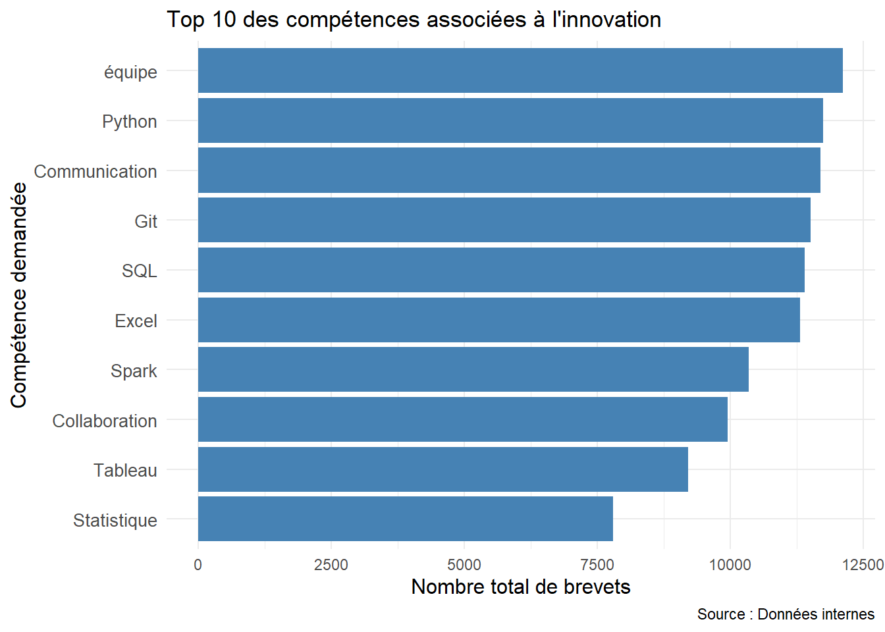
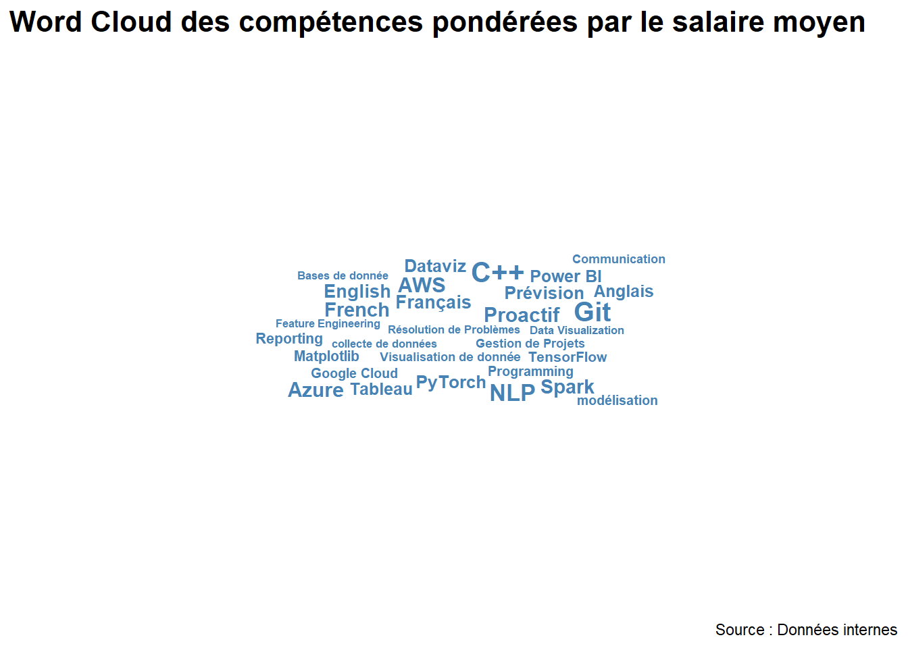
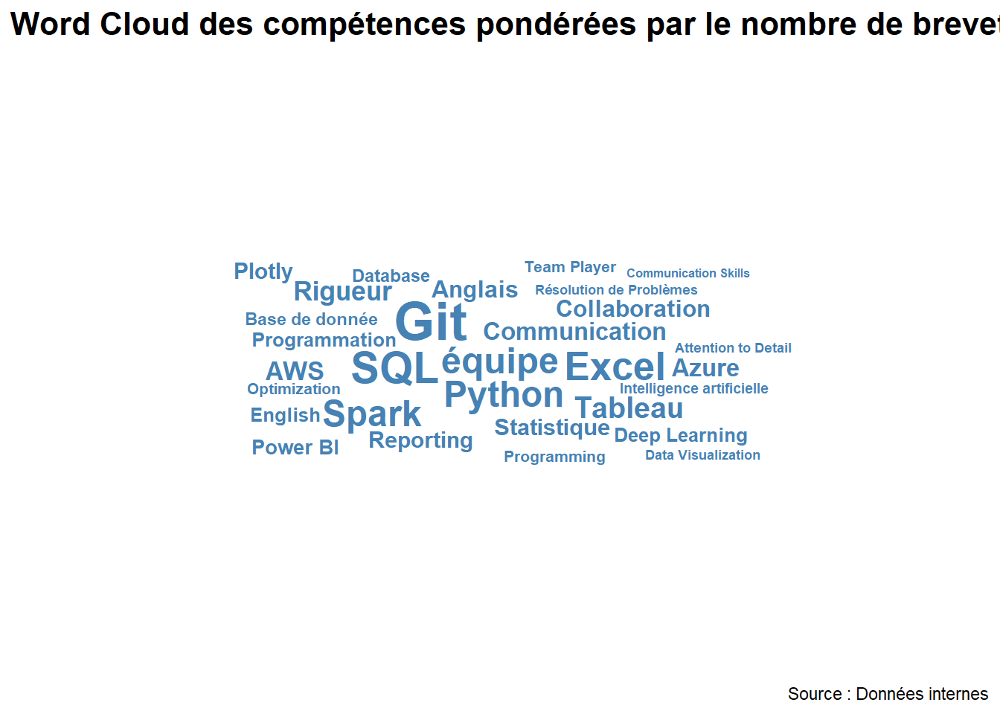

#installer packages
#install.packages('ggplot2')
#install.packages('dplyr')
#install.packages('tidyr')
#install.packages('ggwordcloud')
#install.packages('readr')
#install.packages('sf')
#charger packages :
library(ggplot2)
library(dplyr)
library(tidyr)
library(ggwordcloud)
library(readr)
library(sf)
#charger les données :
data <- read_csv("base_emp_inno.csv")Analyse des données
###Lien entre les dépôts de brevet et l’experience requise
# Filtrer les données pour exclure les NA
data_clean <- data %>%
filter(!is.na(avg_req_exp) & !is.na(n_patents))
# Identifier les valeurs aberrantes (valeurs très élevées) dans le boxplot
outliers <- data_clean %>%
filter(n_patents > quantile(n_patents, 0.75) + 1.5 * IQR(n_patents)) # Critère classique pour un outlier
# Créer le boxplot avec annotation des outliers
ggplot(data_clean, aes(x = factor(avg_req_exp), y = n_patents)) +
geom_boxplot(fill = "orange") +
geom_point(data = outliers, aes(x = factor(avg_req_exp), y = n_patents), color = "red", size = 3) +
geom_text(data = outliers, aes(x = factor(avg_req_exp), y = n_patents, label = firm_name),
vjust = -0.5, hjust = 0.5, size = 3, color = "red") +
labs(
title = "Dépôts de brevets vs Expérience requise moyenne",
x = "Expérience requise moyenne (en années)",
y = "Nombre de brevets déposés"
) +
theme_minimal()
Le graphique montre que la majorité des entreprises innovantes (en termes de brevets déposés) proposent des postes avec peu ou pas d’expérience requise. Une entreprise dominante (Orange) apparaît comme une valeur aberrante, avec un très grand nombre de brevets et des offres sans exigence d’expérience. En revanche, les entreprises demandant 2 à 4 ans d’expérience n’affichent pas un niveau significatif d’innovation.
# Nettoyer les données : filtrer les valeurs manquantes
data_cleaned <- data %>%
filter(!is.na(n_patents), !is.na(avg_req_exp)) %>%
mutate(
n_patents = as.numeric(n_patents),
avg_req_exp = as.numeric(avg_req_exp)
)
# Créer un nuage de points
ggplot(data_cleaned, aes(x = avg_req_exp, y = n_patents)) +
geom_point(alpha = 0.6, color = "steelblue") +
geom_smooth(method = "lm", color = "red", se = TRUE) +
theme_minimal() +
labs(
title = "Relation entre le nombre de brevets et l'expérience requise moyenne",
x = "Expérience requise moyenne (en années)",
y = "Nombre total de brevets",
caption = "Source : Données internes"
) +
theme(
axis.title = element_text(size = 12),
axis.text = element_text(size = 10)
)
On voit ici qu’il n’existe pas de lien significatif entre le nombre de brevets déposés et l’expérience requise moyenne des employés. La dispersion des points et la régression plate indiquent que l’expérience demandée n’influence pas directement le niveau d’innovation, avec une majorité des offres exigeant moins de 4 ans d’expérience.
###Répartition des brevets sur le territoire français
# Nettoyer les données et filtrer les colonnes nécessaires
data_cleaned <- data %>%
select(addr_dept_main.x, n_patents) %>%
filter(!is.na(addr_dept_main.x), !is.na(n_patents)) %>%
mutate(
addr_dept_main.x = as.character(addr_dept_main.x),
n_patents = as.numeric(n_patents)
)
# Agréger le nombre de brevets par département
data_summary <- data_cleaned %>%
group_by(addr_dept_main.x) %>%
summarise(total_patents = sum(n_patents, na.rm = TRUE))
# Importer les contours des départements français
france_departments <- st_read("https://github.com/gregoiredavid/france-geojson/raw/master/departements-version-simplifiee.geojson")Reading layer `departements-version-simplifiee' from data source
`https://github.com/gregoiredavid/france-geojson/raw/master/departements-version-simplifiee.geojson'
using driver `GeoJSON'
Simple feature collection with 96 features and 2 fields
Geometry type: MULTIPOLYGON
Dimension: XY
Bounding box: xmin: -5.103601 ymin: 41.36705 xmax: 9.559721 ymax: 51.0884
Geodetic CRS: WGS 84# Associer les données des brevets aux données géographiques
france_map <- france_departments %>%
left_join(data_summary, by = c("code" = "addr_dept_main.x"))
# Créer une carte
ggplot(data = france_map) +
geom_sf(aes(fill = total_patents), color = "white") +
scale_fill_gradient(low = "lightblue", high = "darkblue", na.value = "grey90", name = "Nombre de brevets") +
theme_minimal() +
labs(
title = "Concentration des brevets par département en France",
subtitle = "Basé sur les données fournies",
caption = "Source : Données internes"
) +
theme(
legend.position = "right",
axis.text = element_blank(),
axis.ticks = element_blank()
)
La carte montre une distribution inégale des brevets en France. Quelques départements, représentés en bleu foncé, concentrent la majorité des brevets, notamment dans des régions comme la Nouvelle-Aquitaine et certains départements centraux. Cela reflète probablement la présence de pôles technologiques, d’entreprises innovantes ou de centres de recherche et développement.
À l’inverse, la majorité des départements en bleu clair ou en gris présentent une activité d’innovation plus faible, ce qui peut être lié à des facteurs économiques, une moindre densité industrielle ou une absence d’infrastructures R&D.
Cette carte met en évidence des disparités régionales en matière d’innovation, soulignant l’importance des écosystèmes locaux pour favoriser la production de brevets.
###Quels sont les codes IPC les plus présents?
data_cleaned <- data %>%
select(ipc_main_code, n_patents) %>%
filter(!is.na(ipc_main_code), !is.na(n_patents)) %>%
group_by(ipc_main_code) %>%
summarise(total_patents = sum(n_patents, na.rm = TRUE)) %>%
arrange(desc(total_patents))
# Limiter aux 20 codes IPC principaux les plus représentés
top_ipc <- data_cleaned %>%
top_n(20, total_patents)
# Créer un graphique horizontal pour les 20 codes IPC principaux
ggplot(top_ipc, aes(x = reorder(ipc_main_code, total_patents), y = total_patents)) +
geom_bar(stat = "identity", fill = "steelblue") +
coord_flip() + # Inverser les axes pour un graphique horizontal
theme_minimal() +
labs(
title = "Top 20 des codes IPC principaux par nombre de brevets",
x = "Code IPC principal",
y = "Nombre total de brevets",
caption = "Source : Données internes"
) +
theme(
axis.text.y = element_text(size = 10),
axis.title = element_text(size = 12)
)
Le graphique montre les 20 codes IPC principaux les plus représentés en termes de nombre de brevets. On observe que le code A61K, lié aux préparations médicales ou pharmaceutiques, domine largement avec un nombre de brevets beaucoup plus élevé que les autres catégories. Cela indique une forte activité d’innovation dans le secteur pharmaceutique et de la santé.
Les codes suivants, H01L (dispositifs semi-conducteurs) et H04W (réseaux de télécommunications sans fil), montrent également une activité significative, soulignant l’importance des secteurs de l’électronique et des télécommunications dans l’innovation.
Enfin, les autres codes IPC, comme C07C (composés organiques), B60C (pneus) et G01S (systèmes de radar), indiquent une diversité des domaines technologiques, avec une présence notable dans la chimie, l’automobile et les systèmes de détection.
En conclusion, le graphique révèle que les secteurs pharmaceutique, électronique et télécommunications sont des moteurs majeurs de l’innovation en matière de brevets, avec une concentration élevée sur certains codes spécifiques.
Est-ce que un grand nombre de dépôts de brevets a un lien avec les offres d’emploi et les compétences recherchées par les entreprises ?
# Nettoyer les données et agréger par secteur
sector_summary <- data %>%
filter(!is.na(sector_main), !is.na(n_patents), !is.na(n_offres)) %>%
group_by(sector_main) %>%
summarise(
total_patents = sum(n_patents, na.rm = TRUE),
total_offers = sum(n_offres, na.rm = TRUE)
) %>%
arrange(desc(total_patents))
# Sélectionner les 10 principaux secteurs en fonction du nombre de brevets
top_sectors <- sector_summary %>%
top_n(10, total_patents)
# Créer un graphique combiné avec un axe secondaire pour les offres d'emploi
ggplot(top_sectors, aes(x = reorder(sector_main, total_patents))) +
geom_bar(aes(y = total_patents), stat = "identity", fill = "steelblue", width = 0.6) +
geom_point(aes(y = total_offers * max(total_patents) / max(total_offers)),
color = "red", size = 3) +
geom_line(aes(y = total_offers * max(total_patents) / max(total_offers), group = 1),
color = "red", linetype = "dashed") +
coord_flip() +
theme_minimal() +
scale_y_continuous(
name = "Nombre de brevets",
sec.axis = sec_axis(~ . * max(top_sectors$total_offers) / max(top_sectors$total_patents),
name = "Nombre d'offres d'emploi")
) +
labs(
title = "Lien entre brevets et offres d'emploi par secteur",
x = "Secteur d'activité",
y = "Nombre total de brevets",
caption = "Source : Données internes"
) +
theme(
axis.text.y = element_text(size = 10),
axis.title = element_text(size = 12),
legend.position = "none"
)
Le graphique montre la relation entre le nombre de brevets déposés et le nombre d’offres d’emploi dans les principaux secteurs d’activité. Les secteurs “Industrie high-tech, Telecom” et “Industrie Pharmaceutique, Biotechnologie, Chimie” se distinguent par un grand nombre de brevets, mais peu d’offres d’emploi, suggérant une innovation concentrée sur la recherche. À l’inverse, l’“Industrie Aéronautique, Aérospatiale” présente un lien plus équilibré entre innovation et recrutement. Enfin, des secteurs comme le BTP et la Banque affichent à la fois peu de brevets et peu d’offres, révélant une activité d’innovation plus faible.
# Nettoyer les données : séparer les compétences multiples
skill_summary <- data %>%
filter(!is.na(top_skill_req), !is.na(n_patents)) %>%
separate_rows(top_skill_req, sep = ",\\s*") %>% # Séparer les compétences par virgule et espace
group_by(top_skill_req) %>%
summarise(total_patents = sum(n_patents, na.rm = TRUE)) %>%
arrange(desc(total_patents)) %>%
top_n(10, total_patents) # Limiter aux 10 compétences les plus liées aux brevets
# Créer un graphique en barres
ggplot(skill_summary, aes(x = reorder(top_skill_req, total_patents), y = total_patents)) +
geom_bar(stat = "identity", fill = "steelblue") +
coord_flip() + # Graphique horizontal pour lisibilité
theme_minimal() +
labs(
title = "Top 10 des compétences associées à l'innovation",
x = "Compétence demandée",
y = "Nombre total de brevets",
caption = "Source : Données internes"
) +
theme(
axis.text.y = element_text(size = 10),
axis.title = element_text(size = 12)
)
Le graphique montre que les compétences les plus liées à l’innovation combinent des compétences techniques et humaines. Les compétences techniques comme Python, SQL, Git, et Statistique sont essentielles pour la gestion des données et le développement, tandis que des compétences interpersonnelles comme le travail en équipe et la communication jouent un rôle clé dans la réussite des projets innovants. Cela souligne que l’innovation repose autant sur la maîtrise d’outils spécialisés que sur une bonne dynamique collaborative.
Quels sont les compétences les plus présentes
###pour les salaires les plus élevés
# Nettoyer les données : séparer les compétences multiples et agréger par salaire moyen
skill_salary <- data %>%
filter(!is.na(top_skill_req), !is.na(avg_wage)) %>%
separate_rows(top_skill_req, sep = ",\\s*") %>% # Séparer les compétences multiples
group_by(top_skill_req) %>%
summarise(avg_wage = mean(avg_wage, na.rm = TRUE)) %>%
arrange(desc(avg_wage)) %>%
top_n(30, avg_wage) # Limiter aux 30 compétences les mieux rémunérées
# Créer un Word Cloud avec ajustements
ggplot(skill_salary, aes(label = top_skill_req, size = avg_wage)) +
geom_text_wordcloud(
color = "steelblue",
fontface = "bold",
shape = "square",
area_corr = TRUE, # Ajuste l'espace occupé par les mots
max_steps = 1000 # Augmente les itérations pour un meilleur placement
) +
scale_size_area(max_size = 10) + # Taille maximale ajustée pour éviter les débordements
theme_minimal() +
labs(
title = "Word Cloud des compétences pondérées par le salaire moyen",
caption = "Source : Données internes"
) +
theme(plot.title = element_text(size = 16, face = "bold"))
Le Word Cloud montre que les compétences techniques comme C++, Git, NLP, AWS, et Spark sont celles associées aux salaires les plus élevés dans les entreprises innovantes. Cela reflète l’importance des domaines liés à la programmation, au cloud computing et à l’intelligence artificielle. Par ailleurs, des compétences en visualisation de données (Tableau, Power BI) et en analyse restent également valorisées. Enfin, des compétences transversales comme la résolution de problèmes et la communication apparaissent, bien que moins liées aux rémunérations élevées.
pour le dépôt de brevet
# Nettoyer les données : séparer les compétences multiples et agréger par le nombre de brevets
skill_patents <- data %>%
filter(!is.na(top_skill_req), !is.na(n_patents)) %>%
separate_rows(top_skill_req, sep = ",\\s*") %>% # Séparer les compétences multiples
group_by(top_skill_req) %>%
summarise(total_patents = sum(n_patents, na.rm = TRUE)) %>%
arrange(desc(total_patents)) %>%
top_n(30, total_patents) # Limiter aux 30 compétences les plus liées aux brevets
# Créer un Word Cloud pondéré par le nombre de brevets
ggplot(skill_patents, aes(label = top_skill_req, size = total_patents)) +
geom_text_wordcloud(
color = "steelblue",
fontface = "bold",
shape = "square",
area_corr = TRUE, # Ajuste l'espace occupé par les mots
max_steps = 1000 # Améliore le placement des mots
) +
scale_size_area(max_size = 15) + # Taille maximale ajustée
theme_minimal() +
labs(
title = "Word Cloud des compétences pondérées par le nombre de brevets",
caption = "Source : Données internes"
) +
theme(plot.title = element_text(size = 16, face = "bold"))
Le Word Cloud met en évidence les compétences les plus fréquemment associées à un grand nombre de brevets. Les compétences comme Git, SQL, Excel, Spark et Python dominent, soulignant leur importance dans les entreprises innovantes. Ces compétences, principalement techniques, sont essentielles pour le développement logiciel, la gestion de bases de données et le traitement des données massives.
D’autres compétences telles que Tableau, AWS, et Azure montrent également un lien fort avec l’innovation, notamment dans les domaines du cloud computing et de la visualisation des données. Enfin, des compétences transversales comme le travail en équipe (“équipe”) et la collaboration apparaissent aussi, soulignant leur rôle dans la réussite des projets innovants.
En conséquence, les compétences les plus liées à l’innovation sont fortement orientées vers la technologie des données (SQL, Spark, Python) et les outils de collaboration et de développement (Git, Excel), tout en intégrant des compétences interpersonnelles comme le travail d’équipe.
De plus,l’analyse liée aux salaires moyens est complexe étant donnée le grand nombre de données manquantes (NA) dans la base et risque de ne pas etre significative. nous avons donc décider de ne pas se pencher plus sur cet aspect malgré son importance dans le sujet.
##CONCLUSION Cette analyse met en lumière les dynamiques entre innovation et divers facteurs liés aux entreprises. Les compétences techniques comme Git, SQL, Python, et Spark apparaissent fortement liées à l’innovation, reflétant l’importance du développement logiciel et de la gestion des données dans les secteurs innovants. Cependant, des compétences transversales telles que le travail en équipe et la communication jouent également un rôle clé.
L’étude révèle par ailleurs que l’expérience requise moyenne n’a pas d’impact significatif sur le nombre de brevets déposés, indiquant que l’innovation n’est pas nécessairement liée à des niveaux élevés d’expérience professionnelle.
Enfin, les secteurs comme l’industrie high-tech, la pharmaceutique et l’aéronautique se distinguent par une forte concentration de brevets, bien que le lien entre innovation et offres d’emploi varie selon les secteurs.
En conclusion, l’innovation repose principalement sur des compétences techniques spécialisées et une dynamique collaborative, tandis que son impact sur l’emploi et les exigences professionnelles diffère selon les contextes sectoriels.